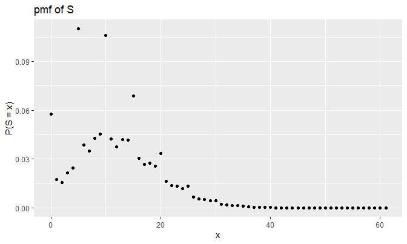
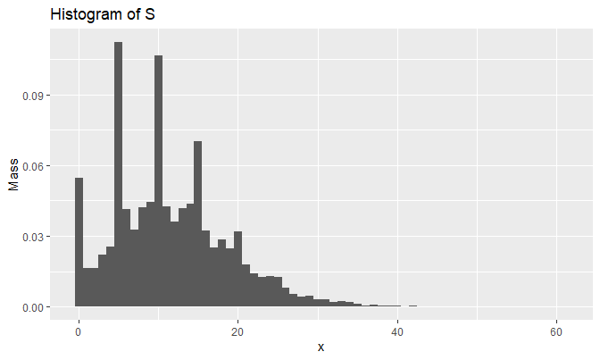
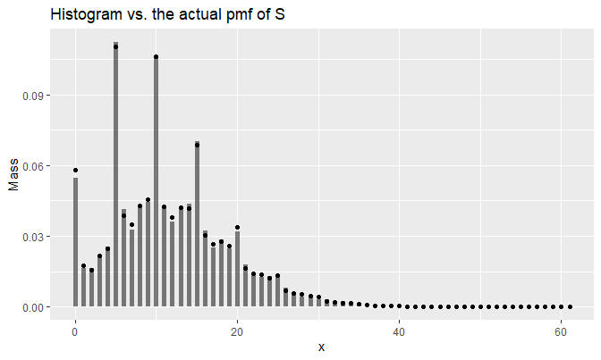

The following external R package is used:
1. Introduction
This note is about finding the probability mass function (pmf) of \(S\), a sum of iid discrete random variables \(X_i\)’s where a support of \(X_i\) is a subset of nonnegative integers. Using the discrete Fourier transform (DFT), the note will demonstrate how we can evaluate the pmf of \(S\), and describe the process of generating random samples from this pmf.
2. Definitions
Probability generating function
Suppose the pmf of \(X_i\) for each \(i\) is \(p(x)\), where \(X_i\)’s are iid. Define the probability generating function (pgf) of \(X_i\) as: \[g(t) := E(t^{X_i}) = \sum_{x} t^x p(x)\] That is, the pgf of \(X_i\) is a power series representation of \(p(x)\) 1. In this note, we will consider two types of sum of \(X_i\)’s:
- \(S = \sum_{i = 1}^{n} X_i\), where \(n\) is fixed
- \(S = \sum_{i = 1}^{N} X_i\), where \(N \sim \text{Pois}(\lambda)\) and \(N\) is independent of all \(X_i\)’s
Suppose also that the support of \(X_i\) is \(\mathcal{X} = \{0, 1, \dots, \ell \}\). That is: \[g(t) := E(t^{X_i}) = \sum_{x = 0}^{\ell} t^x p(x)\] The purpose of this document is to show that we can establish the general method to find the pmf of \(S\), or \(p_S(x)\), using an invertible, linear transformation called the discrete Fourier transform.
Discrete Fourier transform
So how exactly can one use the DFT to get \(p_S(x)\) for any \(X_i\)’s?
Let’s first take a look at \(g(t)\): \[g(t) = \sum_{x = 0}^{\ell} t^x p(x)\] If I choose \(g(t)\) to be evaluated at: \[t_k := \exp (-\frac{2 \pi i k}{n \ell + 1})\] for \(k = 0, 1, \dots, \ell\), then \(g(t_k)\) for each \(k\) becomes: \[g(t_k) = \sum_{x = 0}^{\ell} p(x) \cdot \exp (-\frac{2 \pi i k x}{n \ell + 1})\] In other words, the DFT of a sequence \(\{p(x)\}_{x = 0}^{\ell}\) is \(\{g(t_k) \}_{k = 0}^{\ell}\) by the definition of DFT.
3. Case studies
For \(k = 0, 1, \dots, n \ell\), define \(t_k := \exp \big( - \frac{2 \pi i k}{n \ell + 1} \big)\).
Case 1: a finite sum
Say \(X_i \stackrel{iid}{\sim} p\) for some pmf \(p\) with the support \(\mathcal{X} = \{0, h, 2h, \dots, \ell h \}\) for some \(h > 0\) 2. Without loss of generality, assume \(h = 1\). Suppose \(S = \sum_{i = 1}^{n} X_i\) (and notice that the support of \(S\) is then \(\mathcal{S} = \{0, 1, \dots, n \ell\}\) assuming \(h = 1\)). Then due to the iid condition, the pgf of \(S\), denoted as \(g_S(t)\), becomes:
\[\begin{align*} g_S(t) &= E(t^S) = \sum_{x = 0}^{n \ell} t^x p_S(x) \\ &= E(t^{\sum_{i = 1}^{n} X_i}) \\ &= E(t^{X_1} t^{X_2} \dots t^{X_n}) \\ &= [g(t)]^n \end{align*}\]
That is, for \(x \in \mathcal{S}\): \[p_S(x) = \frac{1}{n \ell + 1} \sum_{k = 0}^{n \ell} [g(t_k)]^n \cdot \exp(\frac{2 \pi i k x}{n \ell + 1})\]
by the definition of inverse DFT. Note that the condition \(P(X_i \in \mathbb{N}_0) = 1\), where \(\mathbb{N}_0 := \mathbb{N} \cup \{0 \}\), guarantees that \(\mathcal{X} = \{0, 1, \dots, \ell \} \subset \mathcal{S}\) so that: \[g(t) = \sum_{x \in \mathcal{X}} t^x p(x) = \sum_{x \in \mathcal{S}} t^x p(x)\] by letting \(p(x) = 0\) whenever \(x \in \mathcal{S} \cap \mathcal{X}^c\).
Case 2: an infinite sum
Now suppose \(X_1, X_2, \dots\) is an infinite sequence of iid discrete random variables, and \(N \sim \text{Pois}(\lambda)\) is independent of the sequence. Define \(S\) as: \[S = \sum_{i = 1}^{N} X_i\] and \(S := 0\) if \(N = 0\) (i.e. \(P(S = 0 \text{ | } N = 0) = 1\)).
If we work out to see how \(p_S(x)\) actually looks like, we get:
\[\begin{align*} p_S(x) &= P(S = x) \\ &= \sum_{n = 0}^{\infty} P(N = n) P(S = x \text{ | } N = n) \\ &= \sum_{n = 0}^{\infty} P(N = n) p_{S_n}(x) \\ &= e^{-\lambda} I(x = 0) + \sum_{n = 1}^{\infty} P(N = n) p_{S_n}(x) \end{align*}\]
where \(p_{S_n}(x)\) is the pmf of \(S_n = \sum_{i = 1}^{n} X_i\), which is something we know how to compute.
ASIDE 1: we can also realize the distribution of \(S = \sum_{i = 1}^{N} X_i\) by computing the characteristic function of \(S\):
\[\begin{align*} c_S(t) &:= E(e^{i t S}) \\ &= E(e^{i t \sum_{i = 1}^{N} X_i}) \\ &= E \Big[ E( e^{i t \sum_{i = 1}^{N} X_i} \text{ | } N) \Big] \\ &= E \Big[ \prod_{i = 1}^{N} E(e^{i t X_i} \text{ | } N) \Big] \text{ } (\because \text{indep.}) \\ &= E \Big[ \prod_{i = 1}^{N} E(e^{i t X_i} ) \Big] \text{ } (\because X_i \perp \!\!\! \perp N) \\ &=: E \Big[ \prod_{i = 1}^{N} c_{X_i}(t) \Big] \\ &= E \Big[ \big( c_{X_i}(t) \big)^N \Big] \text{ } (\because \text{identical}) \\ &=: g_N(c_{X_i}(t)) \end{align*}\]
where \(g_N(t)\) is the pgf of \(N\). Applying the inverse Laplace transform to \(g_N(c_{X_i}(t))\) will yield the distribution of \(S\) \(\text{}\)2.
Idea to cut
One problem is that we cannot compute infinitely many \(p_{S_n}(x)\)’s in a computer. Even if we are able to find the general expression of \(p_{S_n}(x)\) in terms of \(n\), it is still a tideous work to analytically compute \(p_S(x)\). We need to implement some reasonable threshold to “cut” \(p_S(x)\) at some point, and approximate \(p_S(x)\) within an arbitrarily small error.
To implement this idea, we can use Markov’s inequality. It says that for a nonnegative \(S\): \[P(S \geq M) = P(t^{S} \geq t^M) \leq \frac{E(t^{S})}{t^M} = \frac{g_S(t)}{t^M}\] for all \(t > 1\). The inequality implies that there is a device to adjust \(P(S \geq M)\) by adjusting \(M\). In particular, assume we want to see \(P(S \geq M) < \varepsilon\) for some small \(\varepsilon > 0\) that fits our needs. Then: \[P(S \geq M) \leq \min \big(\varepsilon, \frac{g_S(t)}{t^M} \big)\] That is, adjusting \(M\) allows us to make \(P(S \geq M)\) as small as we want. To ensure \(P(S \geq M) < \varepsilon\), we let \(\min \big(\varepsilon, \frac{g_S(t)}{t^M} \big) = \frac{g_S(t)}{t^M}\), or: \[\varepsilon \geq \frac{g_S(t)}{t^M}\]
pgf of an infinite sum
Say the pgf of \(X_i\) is \(g(t)\). Then the pgf of \(S = \sum_{i = 1}^{N} X_i\) should be:
\[\begin{align*} g_S(t) &= E(t^S) \\ &= E(t^{\sum_{i = 1}^{N} X_i}) \\ &= E\big[ E(t^{\sum_{i = 1}^{N} X_i} \text{ | } N) \big] \\ &= E\big[ \prod_{i = 1}^{N} E(t^{X_i} \text{ | } N) \big] \\ &= E\big[ \prod_{i = 1}^{N} E(t^{X_i} ) \big] \text{ } (\because X_i \perp \!\!\! \perp N) \\ &= E\big[ [g(t)]^N \big] \\ &= g_N(g(t)) \end{align*}\]
where \(g_N(t)\) is the pgf of \(N\). \(g_N(t)\) is computed as:
\[\begin{align*} g_N(t) &= E(t^N) = \sum_{n = 0}^{\infty} t^n p_N(n) \\ &= \sum_{n = 0}^{\infty} t^n \frac{\lambda^n e^{-\lambda}}{n!} \\ &= \sum_{n = 0}^{\infty} \frac{(\lambda t)^n e^{-\lambda}}{n!} \\ &= e^{-\lambda} \sum_{n = 0}^{\infty} \frac{(\lambda t)^n}{n!} \\ &= e^{-\lambda} e^{\lambda t} \\ &= \exp \big(-\lambda(1 - t)\big) \end{align*}\]
Therefore, \[g_S(t) = g_N(g(t)) = \exp \big[-\lambda (1 - g(t)) \big]\]
Back to the inequality, we can finally determine the appropriate \(M\) that is not too big, and yet satisfies \(P(S \geq M) < \varepsilon\):
\[\begin{align*} \varepsilon &\geq \frac{g_S(t)}{t^M} \\ \implies \hspace{47pt} \varepsilon t^M &\geq g_S(t) = \exp \big[-\lambda (1 - g(t)) \big] \\ \implies \ln (\varepsilon) + M \ln(t) &\geq -\lambda (1 - g(t)) \\ \implies \hspace{32pt} M \ln(t) &\geq -\lambda (1 - g(t)) - \ln(\varepsilon) \\ \implies \hspace{53pt} M &\geq \frac{-\lambda (1 - g(t)) - \ln(\varepsilon)}{\ln(t)} \end{align*}\]
\(M\) can be any number that satisfies the above inequality. Take \(M = \underset{t > 1}{\inf} \big\{ \frac{-\lambda (1 - g(t)) - \ln(\varepsilon)}{\ln(t)} \big\}\) which is the smallest possible \(M\); we take the smallest value so that we can ignore as many cases of \(S = \sum_{i = 1}^{N} X_i\) as possible (i.e. simplify \(S\) as much as possible).
The algorithm
So here’s how to use the DFT to “find” — actually, approximate — the pmf of \(S = \sum_{i = 1}^{N} X_i\), \(N \sim \text{Pois}(\lambda)\), with \(X_i\) having a support \(\mathcal{X} = \{0, 1, \dots, \ell \}\):
- Choose \(\varepsilon \in (0, 1)\).
- Compute \(\{p(x)\}_{x \in \mathcal{X}}\).
- Compute \(M = \text{ceil} \Big( \underset{t > 1}{\inf} \big\{ \frac{-\lambda (1 - g(t)) - \ln(\varepsilon)}{\ln(t)} \big\} \Big)\) so that \(P(S \geq M) < \varepsilon\).
- Define \(\mathcal{S}^* = \{0, 1, \dots, M - 1 \}\), a truncated support of \(S\).
- Append \(M - (\ell + 1)\) \(0\)’s at the end of \(\{p(x)\}_{x \in \mathcal{X}}\) so that \(\{p(x) \}_{x \in \mathcal{S}^*}\) is now a sequence of length \(M\): \[\big\{p(x) \big\}_{x \in \mathcal{S}^*} = \big\{\underbrace{p(0), p(1), \dots, p(\ell)}_{\text{sequence length} = \ell + 1}, \underbrace{p(\ell + 1) = 0, \dots, p(M-1) = 0}_{\text{length} = M - (\ell + 1)} \big\}\]
- Compute \(\{g(t_k) \}_{k = 0}^{M - 1}\), the DFT of \(\{p(x) \}_{x \in \mathcal{S}^*}\).
- Compute \(\{g_S(t_k) \}_{k = 0}^{M - 1} = \{g_N(g(t_k)) \}_{k = 0}^{M - 1}\).
- Compute \(\{ p_S(x) \}_{x \in \mathcal{S}^*}\), the inverse DFT of \(\{g_S(t_k) \}_{k = 0}^{M - 1}\).
This approximation actually yields the conditional pmf of \(S\), i.e. \(P(S = x \text{ | } S < M)\). Notice that as \(M \to \infty\), we get \(P(S \geq M) \to 0\) and \(P(S = x \text{ | } S < M) \to P(S = x) = p_S(x)\) for each \(x \in \mathcal{S}^*\).
ASIDE 2: If \(N \sim \text{Geom}(p)\) so that \(p_N(n) = p (1 - p)^{n - 1}\), \(n \in \mathbb{N}\), then we can use \(g_N(t) = m_N(\ln(t)) = \frac{p t}{1 - (1 - p) t}\) instead of \(g_N(t) = \exp(-\lambda(1 - t))\). Also, you don’t need to worry about whether \(\mathcal{X} \subset \mathcal{S}^*\) will be satisfied, because \(P(N = 1) > 0\) so it is guaranteed to be.
ASIDE 3: If \(\mathcal{X} \subsetneq \{n h \}_{n = 0}^{\ell}\), e.g. \(h = .5\) and \(\mathcal{X} = \{1, 1.5, 2, 3 \}\) (i.e. \(\ell = 6\)), then we can “extend” \(\mathcal{X}\) so that \(\mathcal{X}^* = \{n h \}_{n = 0}^{\ell}\) is our new “support”. So if \(\mathcal{X} = \{1, 1.5, 2, 3 \}\), then \(\mathcal{X}^* = \{0, 0.5, 1, 1.5, 2, 2.5, 3 \}\) and \(p(x) = 0\) whenever \(x = 0, 0.5\), or \(2.5\). We can find \(M\) by first transforming \(\mathcal{X}^* = \{n h \}_{n = 0}^{\ell}\) into \(\frac{1}{h}\mathcal{X}^* = \{ n\}_{n = 0}^{\ell}\) and then using the above method. Transform \(\frac{1}{h}\mathcal{S}^* =\{ n \}_{n = 0}^{M - 1}\) to \(\mathcal{S}^* = \{ nh \}_{n = 0}^{M - 1}\).
4. An example
We first define our pmf of \(X_i\) with \(\mathcal{X} = \{0, 1, \dots, 5 \}\) as: \[p(x) = \begin{cases} .05 & x = 0 \\ .1 & x = 1, 3, 4 \\ .075 & x = 2 \\ .575 & x = 5 \end{cases}\]
dX <- function(x) {
sapply(
x,
function(d) {
if (d == 0) {
.05
} else if (d %in% c(1, 3, 4)) {
.1
} else if (d == 2) {
.075
} else if (d == 5) {
.575
} else {
0
}
}
)
}We use the name dX instead of pX, p_X, or px, and so on, to be consistent with other names of density functions in R (such as dpois or dbinom). Also, dX is designed so that when it takes the vector input, it returns the vector output.
The following function csum_N (where c stands for “calibrate”) takes arguments pmf, support, eps, and lambda. It returns the pmf vector of \(S = \sum_{i = 1}^{N} X_i\), where \(N \sim \text{Pois}(\lambda)\), using the DFT.
The function is designed to compute the pmf of \(S = \sum_{i = 1}^{N} X_i\) under these assumptions:
pmfis the pmf of each (iid) \(X_i\)’s.supportconsists of all the nonnegative integers up to the largest element in \(\mathcal{X}\). In our case,support = 0:5.epsis the value in \((0, 1)\); \(10^{-5}\) by default.lambdais the mean of \(N \sim \text{Pois}(\lambda)\), and \(N\) is independent of all \(X_i\)’s.
csum_N <- function(pmf, support, eps = 1e-05, lambda) {
# pmf: a probability mass function
# support: an integer vector from 0 to the largest element of
# the pmf's support
# eps: a number in (0, 1); 1e-05 by default
# lambda: a positive number
pmf_vec <- pmf(support)
# Define the pgf of X_i
g <- function(t) {sapply(t, function(d) {sum(d^support * pmf_vec)})}
# Find M
Ms <- function(t) {(-lambda * (1 - g(t)) - log(eps)) / log(t)}
M <- ceiling(optimize(Ms, interval = c(1.001, 30000))$objective)
# Append 0's
pmf_vec <- c(pmf_vec, rep(0, M - length(pmf_vec)))
# Apply DFT and inverse DFT
gtks <- fft(pmf_vec)
gS_gtks <- exp(-lambda * (1 - gtks))
pS_tks <- Re(fft(gS_gtks, inv = T) / M)
pS_tks
}(Re() function is applied to eliminate roundoff errors introduced in imaginary components.)
So for example, if the pmf of your desire is: \[p(y) = \begin{cases} .25 & y = 1 \\ .5 & y = 2 \\ .25 & y = 4 \end{cases}\] then you should put 0:4 in the place of support instead of c(1, 2, 4), although the latter is the actual support. Note that \(\mathcal{Y} = \{1, 2, 4 \} \subset \mathcal{S}^* = \{0, 1, \dots, M - 1 \}\) is guaranteed since \(P(N = 0) > 0\) and \(P(N = 1) > 0\), and thus csum_N will work fine with \(p(y)\) given support 0:4.
Back to the case of \(p(x)\), we can check the value of \(M\) that csum_N calculates, and whether csum_N actually calculates the pmf of \(S\). Let \(\lambda = 3\):
## [1] 62 1We see that csum_N generates the pmf of \(S\). As a side note, let’s see the case of \(p(y)\) as well:
dY <- function(y) {
sapply(
y,
function(d) {
if (d %in% c(1, 4)) {
.25
} else if (d == 2) {
.5
} else {
0
}
}
)
}
result_Y <- csum_N(dY, support = 0:4, lambda = 3)
M_Y <- length(result_Y)
c(M_Y, sum(result_Y))## [1] 39 1It does work for \(p(y)\), as it should be. Now, let’s visualize the pmf of \(S\):

It looks odd at first, but this plot actually makes sense; \(p(5)\) is \(.575\), which is more than a half. Notice that each peak occurs at the multiples of \(5\), and peaks of the pmf get stabilized for large values of \(x\).
Also, \(P(S = 0) \approx .06\) makes sense because:
\[\begin{align*} P(S = 0) &= e^{-\lambda} + \sum_{n = 1}^{\infty} P(N = n) p_{S_n}(0) \\ &= e^{-\lambda} + \sum_{n = 1}^{\infty} p_N(n) (p(0))^n \text{ (} \because S_n = 0 \iff X_i = 0 \text{ } \forall \text{ } i \text{)} \\ &= e^{-\lambda} + \sum_{n = 1}^{\infty} \frac{\lambda^n e^{-\lambda}}{n!} (.05)^n \\ &= e^{-\lambda} + e^{-\lambda} \sum_{n = 1}^{\infty} \frac{(.05 \lambda)^n}{n!} \\ &= e^{-\lambda} + e^{-\lambda} (e^{.05 \lambda} - 1) \\ &= e^{-\lambda} (1 + e^{.05 \lambda} - 1) = e^{-\lambda + .05 \lambda} \\ &= e^{-.95 \lambda} = e^{-.95 \cdot 3} \approx 0.05784432 \\ &\approx .06 \end{align*}\]
Let’s check how \(S_Y = \sum_{i = 1}^{N} Y_i\) looks like this time:
Does this plot make sense? Let’s check as before (remember, \(\lambda = 3\)):
\[\begin{align*} P(S_Y = 0) &= e^{-\lambda} + \sum_{n = 1}^{\infty} P(N = n) p_{S_Y}(0) \\ &= e^{-\lambda} + 0 = e^{-\lambda} \\ &\approx 0.04978707 \\ P(S_Y = 1) &= \sum_{n = 1}^{\infty} P(N = n) p_{S_Y}(1) \\ &= P(N = 1) p_{S_Y}(1) + 0 \\ &= \lambda e^{-\lambda} \cdot .25 \\ &\approx 0.0373403 \\ P(S_Y = 2) &= \sum_{n = 1}^{\infty} P(N = n) p_{S_Y}(2) \\ &= P(N = 1) \cdot .5 + P(N = 2) \cdot (.25^2) \\ &= \lambda e^{-\lambda} \cdot .5 + \frac{\lambda^2 e^{-\lambda}}{2} \cdot .0625 \\ &= (.5 \lambda + .03125 \lambda^2) e^{-\lambda} \\ &\approx 0.08868322 \\ P(S_Y = 3) &= \sum_{n = 1}^{\infty} P(N = n) p_{S_Y}(3) \\ &= P(N = 2) (2 \times .25 \cdot .5) + P(N = 3) \cdot .25^3 \\ &= \frac{\lambda^2 e^{-\lambda}}{2} \cdot .25 + \frac{\lambda^3 e^{-\lambda}}{6} \cdot .25^3 \\ &= (\frac{.25 \lambda^2}{2} + \frac{.25^3 \lambda^3}{6}) e^{-\lambda} \\ &\approx 0.05951111 \end{align*}\]
## [1] 0.04978729 0.03734044 0.08868328 0.05951115They are the same. Indeed, the effect of \(p(y = 2) = .5\) is evident in the plot.
dpmf will generate the pmf using the outpuf of csum_N:
dpmf <- function(x, pmf_vec, support_vec) {
# x: a number, or a vector whose class is the same as support_vec.
# pmf_vec: a numeric vector, where all elements fall into (0, 1) and
# sum up to 1.
# support_vec: a vector with the same length as pmf_vec where
# each entry of support_vec is the input that corresponds to
# the probability in pmf_vec; if missing, it is replaced
# with 0:(length(pmf_vec) - 1).
M <- length(pmf_vec)
if (missing(support_vec)) {
names(pmf_vec) <- 0:(M - 1)
} else {
names(pmf_vec) <- support_vec
}
sapply(
x,
function(d) {
if (d %in% names(pmf_vec)) {
unname(pmf_vec[as.character(d)])
} else {
0
}
}
)
}So for example, \(p_S(0)\) is computed as:
## [1] 0.05784451It is almost the same as \(e^{-.95 \cdot 3} \approx 0.05784432\). The difference is coming from conditioning: \(P(S = x \text{ | } S < M) \approx P(S = x)\) when \(M\) is large.
Note that support_vec in dpmf need not be a numeric vector! For example, if you want to define: \[p(\text{fruit}) = \begin{cases} .25 & \text{fruit} = \text{apple} \\ .4 & \text{fruit} = \text{orange} \\ .35 & \text{fruit} = \text{neither} \end{cases}\] then you can write dfruit as:
so that the pmf dfruit returns things like:
## [1] 0.25 0.35csum_N can also be used to generate random samples of \(S\) using the inversion method:
rpmf <- function(n, pmf, support, ...) {
# n: an integer
# pmf, support: the same as pmf_vec and support_vec in dpmf respectively
# ...: additional arguments of pmf
cdf <- c(0, cumsum(pmf(support, ...)))
unif_01 <- runif(n)
result <- numeric(length = n)
for (k in 1:n) {
for (j in 1:(length(cdf) - 1)) {
if (I(unif_01[k] >= cdf[j] & unif_01[k] < cdf[j + 1])) {
result[k] <- support[j]
}
}
}
result
}For example, the following line of code will generate 20 samples of \(X_i \sim\)dX:
## [1] 2 5 4 4 0 5 2 3 5 5 0 5 4 5 5 2 5 5 5 5The following will generate 12 samples of \(S = \sum_{i = 1}^{N} X_i\):
## [1] 0 9 3 10 20 16 10 7 10 12 26 14In the following code, we generate 14 samples from dfruit:
## [1] "apple" "neither" "orange" "neither" "apple" "neither" "apple"
## [8] "orange" "orange" "neither" "neither" "neither" "neither" "apple"Let’s generate 10,000 samples of \(S\) and draw the histogram:
set.seed(2048)
samples_N <- rpmf(10000, dpmf, 0:(M - 1), result)
qplot(
samples_N, y = ..density..,
geom = 'histogram',
breaks = seq(-.5, M - .5, by = 1),
main = 'Histogram of S',
xlab = 'x', ylab = 'Mass'
)
We can superimpose the pmf plot and the histogram using the fact that: \[\text{hist}(x) := \sum_{k = 1}^{m} \Big[ \frac{I(x \in B_k)}{n(u_k - u_{k - 1})} \sum_{i = 1}^{n} I(x_i \in B_k) \Big]\] given data \(x_1, \dots, x_n\), and bins \(B_k = [u_{k - 1}, u_k)\), \(k = 1, \dots, m\), satisfying \(B_a \cap B_b = \varnothing\) for all \(a \neq b\). Define histo, the function that returns the value \(\text{hist}(x)\) at \(x\) given data and bins:
histo <- function(x, dat, bins) {
# x: a number, or vector of numbers
# dat: a vector of numbers
# bins: a vector of numbers where min(bins) <= min(dat) and
# max(bins) > max(dat)
bins <- sort(bins)
n <- length(dat)
m <- length(bins) - 1
counts_B_k <- numeric(length = m)
for (i in 1:n) {
bin_not_found_yet <- T
k <- 1
while (bin_not_found_yet) {
u_k_1 <- bins[k]
u_k <- bins[k + 1]
if (I(dat[i] >= u_k_1 && dat[i] < u_k)) {
counts_B_k[k] <- counts_B_k[k] + 1
bin_not_found_yet <- F
}
k <- k + 1
}
}
denoms <- n * diff(bins)
sapply(
x,
function(d) {
I_x_B_k <- numeric(length = m)
for (k in 1:m) {
u_k_1 <- bins[k]
u_k <- bins[k + 1]
if (I(d >= u_k_1 && d < u_k)) {
I_x_B_k[k] <- 1
}
}
sum((I_x_B_k / denoms) * counts_B_k)
}
)
}A superimposed plot looks like the following:
mass <- histo(0:(M - 1), dat = samples_N, bins = seq(-.5, M - .5, by = 1))
ggplot(
data.frame(
x = 0:(M - 1),
y = result,
line_drawer = c(rep(0, M), mass)
),
aes(x = x)
) +
geom_line(aes(y = line_drawer, group = x), alpha = .5, size = 2) +
geom_point(aes(y = y)) +
labs(y = 'Mass', title = 'Histogram vs. the actual pmf of S')
Python implementation
See here for details.
5. Conclusion
- With \(X_i \stackrel{iid}{\sim} p(x)\) having a support \(\mathcal{X} = \{0, 1, \dots, \ell \}\), you can compute the pmf of \(S = \sum_{i = 1}^{n} X_i \sim p_S(x)\) as: \[p_S(x) = \frac{1}{n \ell + 1} \sum_{k = 0}^{n \ell}[g(t_k)]^n \cdot \exp\big(\frac{2 \pi i k x}{n \ell + 1}\big)\] where the support of \(S\) is \(\mathcal{S} = \{ 0, 1, \dots, \ell, \ell + 1, \dots, n \ell \}\).
- If \(S = \sum_{i = 1}^{N} X_i\), \(N \sim \text{Pois}(\lambda)\) with \(X_i \perp \!\!\! \perp N\) for all \(i\), then we can approximate \(p_S(x) = P(S = x)\) by \(p_S(x \text{ | } S < M) = P(S = x \text{ | } S < M)\) using some large \(M\) and the DFT.
csum_Nfunction computes the pmf of \(S = \sum_{i = 1}^{N} X_i\), \(N \sim \text{Pois}(\lambda)\), at each \(x = 0, 1, \dots, M - 1\). Even if \(\mathcal{X}\) of your pmf doesn’t have a form \(\{0, 1, \dots, \ell \}\), you can still use this function to find the pmf of \(S\) given that \(\mathcal{X} \subsetneq \{n \}_{n = 0}^{\ell}\) so that the extension \(\mathcal{X}^*\) has a form \(\{ n \}_{n = 0}^{\ell}\).
Session Info
R session info:
## R version 3.6.1 (2019-07-05)
## Platform: x86_64-w64-mingw32/x64 (64-bit)
## Running under: Windows 10 x64 (build 18362)
##
## Matrix products: default
##
## locale:
## [1] LC_COLLATE=English_Canada.1252 LC_CTYPE=English_Canada.1252
## [3] LC_MONETARY=English_Canada.1252 LC_NUMERIC=C
## [5] LC_TIME=English_Canada.1252
##
## attached base packages:
## [1] stats graphics grDevices utils datasets methods base
##
## other attached packages:
## [1] dplyr_0.8.3 reticulate_1.13 pROC_1.15.3
## [4] ggrepel_0.8.1 ggplot2_3.2.1 funpark_0.2.6
## [7] data.table_1.12.2 boot_1.3-22 rmarkdown_1.15
## [10] magrittr_1.5 itertools2_0.1.1
##
## loaded via a namespace (and not attached):
## [1] prettydoc_0.3.0 tidyselect_0.2.5 xfun_0.9 purrr_0.3.2
## [5] lattice_0.20-38 colorspace_1.4-1 vctrs_0.2.0 htmltools_0.3.6
## [9] yaml_2.2.0 utf8_1.1.4 rlang_0.4.0 pillar_1.4.2
## [13] glue_1.3.1 withr_2.1.2 plyr_1.8.4 stringr_1.4.0
## [17] munsell_0.5.0 gtable_0.3.0 evaluate_0.14 labeling_0.3
## [21] knitr_1.24 fansi_0.4.0 Rcpp_1.0.1 readr_1.3.1
## [25] scales_1.0.0 backports_1.1.4 jsonlite_1.6 hms_0.5.1
## [29] png_0.1-7 digest_0.6.20 stringi_1.4.3 grid_3.6.1
## [33] cli_1.1.0 tools_3.6.1 lazyeval_0.2.2 tibble_2.1.3
## [37] crayon_1.3.4 tidyr_0.8.3 pkgconfig_2.0.2 zeallot_0.1.0
## [41] Matrix_1.2-17 xml2_1.2.2 assertthat_0.2.1 rstudioapi_0.10
## [45] iterators_1.0.12 R6_2.4.0 compiler_3.6.1Wikipedia contributors. (2019, January 22). Probability-generating function. In Wikipedia, The Free Encyclopedia. Retrieved 01:48, May 12, 2019, from https://en.wikipedia.org/w/index.php?title=Probability-generating_function&oldid=879564048↩
Embrechts, P. and Frei, M. (2010, July 08). Panjer recursion versus FFT for compound distributions. Retrieved May 20, 2019, from the ETH Zurich Department of Mathematics Archives, https://people.math.ethz.ch/~embrecht/ftp/PanjerVsFFTcorrected.pdf↩